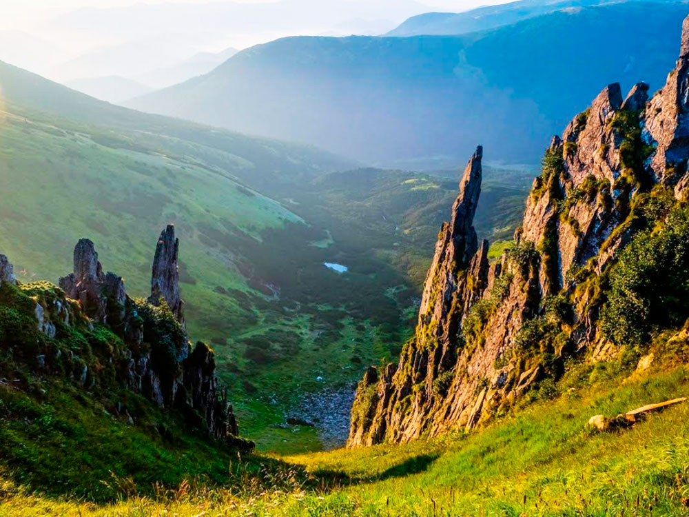
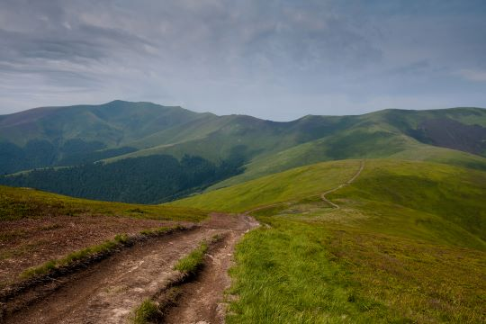
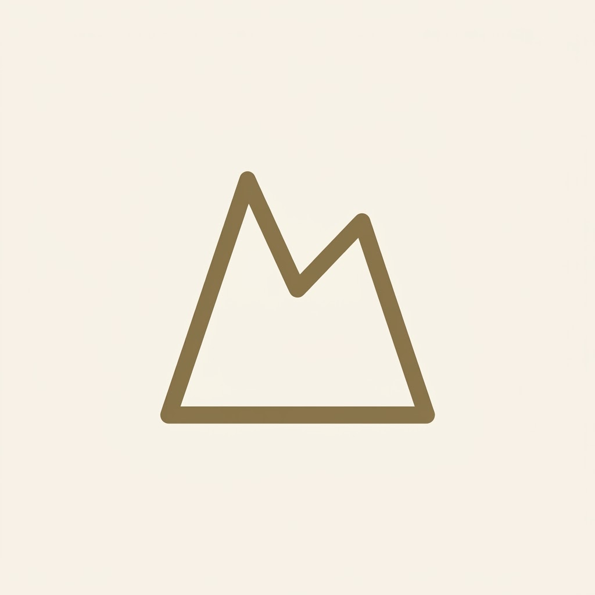
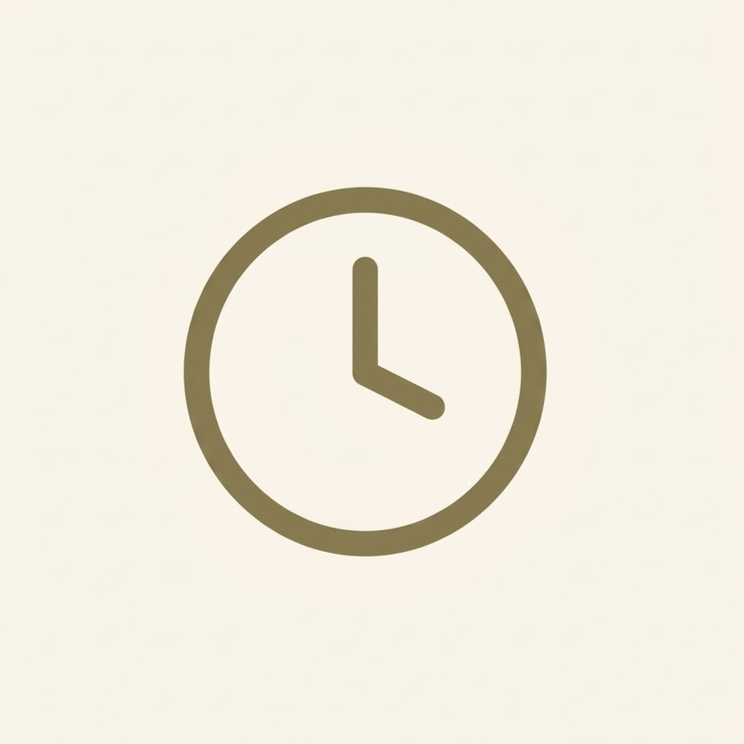
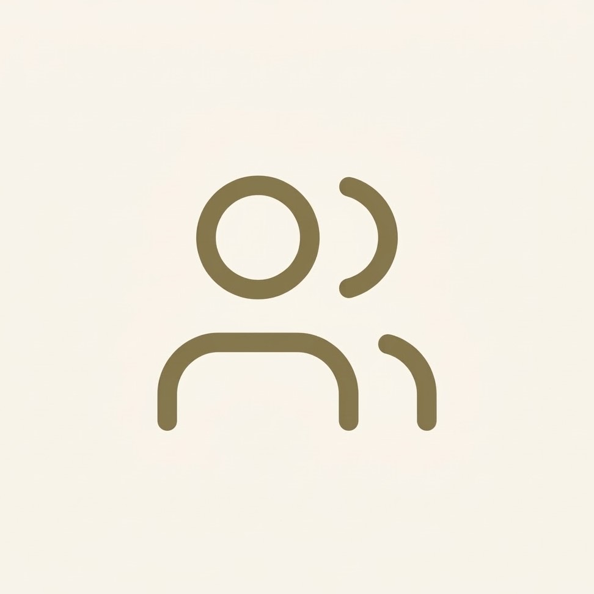
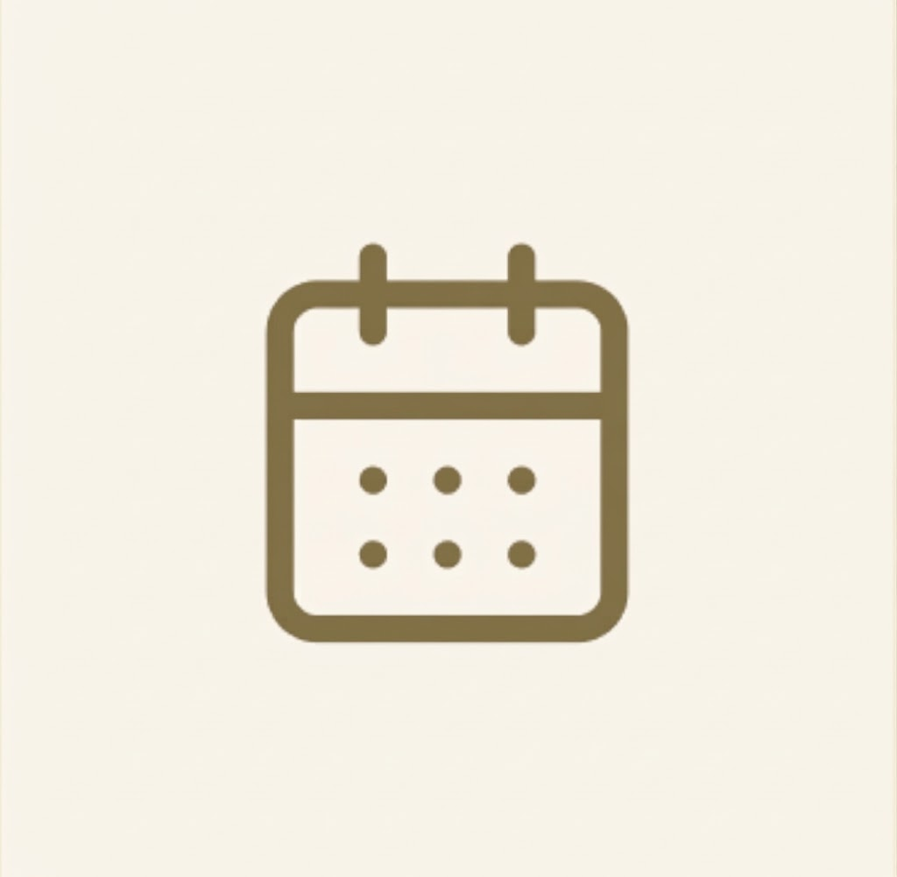

01
Опишіть свій похід
Кількість людей, час, рівень складності та сезон. Пів хвилини на форму — і у списку лишається тільки те, що вам підходить.
Зручний пошук маршрутів, зрозуміла оцінка складності та чекліст підготовки — усе для впевненої мандрівки в Карпати.
Ви одразу бачите, які маршрути відповідають вашим умовам і що взяти з собою — без здогадів і чужих порад із форумів.
Кількість людей, час, рівень складності та сезон. Пів хвилини на форму — і у списку лишається тільки те, що вам підходить.
Для кожного маршруту — тривалість, набір висоти, тип рельєфу й сезонні обмеження. Виберіть той, який ваша група справді пройде.
Відкрийте чекліст, відмітьте спорядження, яке вже готове, і побачте, що залишилося зібрати до виходу.
Обирайте перевірені треки для будь-якого рівня підготовки

Вражаючий трек Чорногорою до величних кам'яних веж

Мальовничий маршрут через високогірне озеро з виходом на гребінь

Неспішна стежка відкритими схилами з краєвидами на карпатські хребти.

Легкий, середній чи складний — і чому саме так: набір висоти, тип рельєфу, тривалість переходів.

Від кількох годин до кількох днів із ночівлями. Показуємо час у дорозі, а не лише кілометри.

Скільки вас і з ким ви йдете: з дітьми, з новачками, великою компанією — набір маршрутів від цього змінюється.

Кожен маршрут має період, коли він прохідний, і попередження про сезонні обмеження.
Досвід тих, хто вже знайшов свій маршрут
Завдяки зручному чеклісту вперше зібрала рюкзак без паніки і нічого не забула. Маршрут на Озеро Несамовите пройшов ідеально!

Детальний набір висоти та розрахунок часу допомогли правильно розпланувати день і прийти у табір до темряви.

Чудовий додаток для планування! Маршрут на Шпиці детально розписаний, а чекліст дууже виручив. Зняла одну зірочку лише через те, що в дорозі в пару місць зник інтернет і хотілося б офлайн-карту.

Оберіть напрямок, який надихає, а про підготовку подбаємо разом